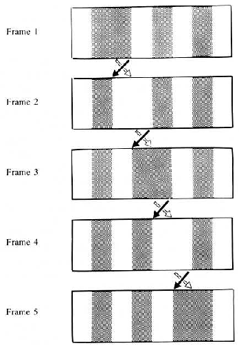

Physical motion can be defined simply as the change in position of an object over time. Visual motion is more challenging to define. Different classes of motion stimuli can be defined, such as first-order or position-defined motion. However, the mechanisms underlying position-defined motion, and how it combines with first-order motion are not well understood. Here I describe a series of experiments and a model of how first-order and position-defined motion might contribute to the appearance of visual motion. Giving conflicting component motions to multiple moving elements produced the novel effect that the appearance of motion favors its first-order or position-defined components as a function of the spacing between elements. This is a result of two complementary effects. First-order motion exhibits summation over large areas: the more elements contribute first-order motion, the stronger the influence of first-order motion. In contrast, position-defined motion exhibits spatial interference: the more closely spaced the motion elements the weaker the positional information. The two signals are combined with a subtractive interaction, which, as described below, may help to dissociate moving objects from the background.
My finding that first-order motion integrates over large areas is consistent with the previous literature. When observers are asked to detect weak broadband motion signals in noise, they can integrate localized motion signals over relatively large regions (Williams and Sekuler, 1984; Downing and Movshon, 1989; Fredericksen et al., 1994); this has been modeled in terms of summation of first-order motion mechanisms. In the case of optic flow stimuli, which may include the rotational carrier motion stimuli used in my experiments, summation can take place over much of the visual field (Morrone et al., 1995; Burr et al., 1998).
However these previous results took measurements of detection or direction discrimination at threshold and not of suprathreshold appearance. In the present experiments it appears that the large-scale summation of first-order motion extends to appearance as well as detection. Under a wide range of conditions motion judgements are influenced by first-order motion in proportion to the density of elements multiplied by the strength of the motion signal.
With the aim of discovering the extent of this spatial summation I controlled the circumferential extent of stimuli in Experiment 2. A limited extent of spatial summation ought to have resulted in saturation with stimuli of larger extents which would have resulted in either a significant interaction between number and spacing or a better fit of carrier motion responses to element spacing rather than number. However, linear summation and dependence on first order motion to number still gave a good account of observers’ behavior in this experiment. While the coefficient of linearity for stimuli in a single hemifield differed from that needed to account for stimuli spanning both hemifields (as in Experiment 1), unrestricted linear summation within each hemifield still provided the best account of sensitivity to carrier motion for stimuli subtending up to 160 degrees of arc.
Note that the extent of this spatial summation is larger than that of the effective receptive field size for motion detecting units in V1 or even MT (Mikami et al., 1986; Livingstone et al., 2001), and appears to be larger than the objects that we have experience in tracking in peripheral vision. One might then wonder why large-scale summation would be part of a mechanism that parses the motion of objects from a possibly cluttered environment containing multiple moving objects. It seems significant that in the present study, all carrier motions had the same rotational direction (a rotation around a central point) within each trial. This might selectively activate global flow mechanisms which integrate over the whole scene (Snowden and Milne, 1997; Price et al., 2004). If this is the case masking optic flow integration by adding iso-eccentric noise (Maruya et al., 2013) might result in reduced summation. This explanation would imply that optic flow mechanisms process first-order motion only, or independently of other types of motion, for which there is some evidence (Aaen-Stockdale et al., 2007). An optic flow contribution could also be tested by varying the direction of first-order motion in my stimuli so as to be incompatible with optic flow mechanisms.
Another possibility is that first-order motion in my stimuli were integrated across space in a kind of contour integration. Detection of a motion element is facilitated when it aligns in direction and position with another moving element (Verghese et al., 2000; Verghese and McKee, 2002); when extended to contours formed of image motion, this effect increases with the number of elements in a path (Ledgeway and Hess, 2002). If motion-defined contour integration is selective for first-order motion, that might have explained the large extent of summation I observed in my experiments. This would require that contour integration take place at an earlier or parallel stage to mechanisms responding to changes in position, since the strength of summation did not depend on the degree to which first-order motion conflicted with position-defined motion. However, I also observed summation at larger inter-element separations than has been found for detection of motion-defined contours in noise (Watt et al., 2008). To test if contour integration accounts for first-order motion summation in these stimuli, one might adjust the stimulus or task to promote segmenting the stimulus into multiple pieces (Verghese and Stone, 1997; Burr et al., 2009).
The previous literature is unclear about whether we might or might not have expected global summation for position-defined motion. Second-order motion does not appear to define contours (Hess et al., 2000), and evidence for any processing of second-order optic flow stimuli is mixed at best (Cassanello et al., 2011; Allard and Faubert, 2013). Even without either of these mechanisms, one might expect observers to be able to pool position-defined motion from multiple identically moving elements, simply due to probabilistic cue combination of multiple cues within a single modality. So it is reasonable to expect at least some improvement of sensitivity to position-defined motion when the number of elements is increased. However I did not find this. The highest sensitivities to envelope motion were achieved when the fewest elements were on screen. Even when elements were separated by more than their retinal eccentricity, so that crowding should not be an issue, there was no improvement in sensitivity to envelope motion when extra elements were added. Instead, sensitivity to envelope motion remained constant for larger separations between elements, and declined as element separation decreased further.
Since each element also carried some carrier motion, adding more elements to the stimulus adds more first-order motion. Some studies find that first-order noise interferes with detection of second-order stimuli (Edwards and Badcock, 1995; Aaen-Stockdale et al., 2012). These studies found that the interference between first- and second- order stimuli scaled with the modulation strength of the first-order stimuli. However, the first-order component in the stimuli I used was not noise. Rather all elements carried identical signals; moreover first-order motion was co-located with the position-defined motion, so that there was no spatial interference between signal and noise elements as in previous studies. I found that varying the strength of the first-order motion signal leads to no changes in the sensitivity to position-defined motion, only a change in bias. In my stimulus, position-defined motion processing does not seem to be subject to interference from first order motion.
It may be surprising that envelope motion becomes less, rather than more visible when “flankers” are added which in fact carry identical information. This may represent a constraint on how position-defined motion is processed. It may be due a limitation of spatial attention, which multiple-object-tracking studies have shown is limited to approximately two moving elements per hemifield (Pylyshyn and Storm, 1988; Alvarez and Cavanagh, 2005; Cavanagh and Alvarez, 2005, review). However, note that since all elements are identical, it is not necessary to distinguish target from non-target, as in the MOT task, unless attentional tracking is in fact necessary to extract position-defined motion. It may also be the case that mechanisms capable of integrating motion among objects require more time than the 500 ms stimulus duration I used.
A possible explanation of a loss in sensitivity to envelope motion is that it is a loss in sensitivity to position itself (and thereby to changes in position.) Some studies have found that localization or form perception of second-order motion stimuli is much poorer than for first-order stimuli (Zanker, 1997; Allen et al., 2004). On the other hand, other studies find very good spatial precision for second-order motion stimuli (Banton and Levi, 1993; Volz and Zanker, 1996). My experiments resolve this apparent difference by showing that the sensitivity to position-defined movement is limited by spatial interference from neighboring features. In the studies mentioned above, poor resolution was found for motion stimuli embedded in noise, while good performance was found for stimuli that were defined by local contrast.
In my experiments I determined that the sensitivity to envelope motion was controlled by the spacing between each element and its nearest neighbors. This finding is typical of the visual phenomenon of crowding (see Pelli and Tillman, 2008; Whitney and Levi, 2011for reviews). In crowding the discrimination or identification of a feature suffers when surrounded by flankers. One can define a “critical distance” as the target-flanker separation which achieves some set elevation of threshold for discrimination or recognition, analogous to how parameter cs operates in the model in Section 4. A typical finding has critical spacing approximately half the retinal eccentricity, which is in line with my findings for envelope motion. However, since Experiment 1 did not distinguish between element spacing and element number as the explanatory variable, I constructed Experiment 2 to compare these possibilities. The results appear to favor element spacing, though the sensitivity of this check was less than desired.
To my knowledge these experiments are the first to establish crowding as the bottleneck limiting sensitivity to position-defined motion. Previously, Bex and Dakin (2005) showed that crowding affects perception of first-order motion in the near periphery. However, there is an important difference between the first-order case and the position-defined case; for first-order motion, the perceived motion is affected by the motion carried by the flanker, showing “compulsory averaging,” which was consistent with what I found for first-order motion. But for position-defined motion I found there was no summation. In the literature it seems that there are two manifestations of the crowding effect, depending on the task: object-level and feature-level. At the feature level, discrimination of elementary features like orientation, motion direction, spatial frequency, hue, and contrast is impaired in the presence of flankers, and there is compulsory averaging (Parkes et al., 2001): the perceived feature is some mixture of the target and flanker features. At object level, stimuli such as letters, objects, and faces, being juxtapositions of multiple features, cannot be recognized in the presence of flankers, but pooling is less obvious; phenomenally the disparate features are mixed into a “jumble” (Zigler et al., 1930). For envelope motion to show no summation suggests that the process subserving envelope motion detection in the visual system does not detect changes in position prior to the crowding bottleneck, but afterwards. Thus position-defined motion is not an elementary feature in the way that first-order motion is. Instead it can be considered at the object level as a juxtaposition of multiple features, if we allow the multiple features to be arranged over time as well as space. In other words the detection of envelope motion rests on an encoding and comparison of successive positions, rather than a lower-level encoding of movement per se.
A recent hypothesis for the mechanism of visual crowding is that outside the fovea, the visual system computes a sort of reduced or “summary statistic” representation of the visual content of regions (Balas et al., 2009; Freeman and Simoncelli, 2011); this summary encodes the density and variance of basic features (e.g. orientation and first-order motion) as well as some second-order interactions between features like collinearity and curvature. This summary-statistic model is derived from models of texture perception, which effectively makes the claim that crowding and texture are the same thing (or, as Parkes et al. put it, “‘crowding’ is simply the name we give to texture perception when we do not wish it to occur.”) Crucially, a summary-statistic representation fails to preserve the relative position of features when more than one object occupies a given region. For example, when targets consist of two crossed bars, their relative position (which distinguishes a “+” from a “T”) is lost or averaged with the flanker (Greenwood et al., 2009; Dakin et al., 2010; Greenwood et al., 2012). Recognition of objects composed of juxtaposed features, such as letters, are thus more difficult under crowded conditions. An account of crowding as a loss of position information is a natural fit for what I found in position-defined motion; since position information becomes less precise under crowding, so does the motion signal computed from successive positions.
When different stimuli or processes in spatial vision are investigated they are often framed as “local” versus “global.” Usually this refers to a difference in spatial scale, either between two aspects of the stimulus used or between the mechanisms that are proposed to respond to them. (Braddick, 1974, 1997; Majaj et al., 2007; Bex and Dakin, 2002) Another usage of “global” describes stimuli that are in some way coherent across the entire visual field (Edwards and Badcock, 1995; Cassanello et al., 2011; Anstis and Kim, 2011), such as optic flow stimuli or rigid-body motions of large objects. Yet another usage is when “global” refers to motion mechanisms that pool or integrate many locally defined signals into a coherent whole (Cropper, 2001), such as combining several local orientation-specific motion signals to compute overall pattern motion (Movshon and Newsome, 1996; Majaj et al., 2007), or in combining several small, noisy displacement signals across a larger area in order to detect random dot motion (Braddick, 1974; Williams and Sekuler, 1984; Newsome et al., 1989). Each of these usages shares the theme that a “global” mechanism is one that can combine information over a relatively large area.
For stimuli that resemble those used in my experiment, which put a first-order, textural motion into conflict with a position-defined motion, the tendency has been to use “local” to refer to the first-order component and “global” to the position. (Tse and Hsieh, 2006; Shapiro et al., 2010, 2011; Hedges et al., 2011; but note Butzer et al., 1997 make the opposite assignment). This may be reasonable from the point of view of constructing the stimulus; first order motion can be constructed in a large field by displacing dots one at a time independently, while producing position-defined motion for a larger object involves coordinating changes over many display pixels in concert. First-order motion may also be defined within a small window, while position-defined motion (by definition) must cross multiple locations. Calling position-defined motion “global” also aligns with the intuition that some process must be able to integrate changes in position over a path that crosses several local receptive fields; otherwise how could a moving object appear to be the same object after it has moved? Nonetheless, care should be taken to avoid identifying the properties of the stimulus construction with those of the mechanism it probes (Cavanagh, 1991; Boulton and Baker, 1993).
In the case of my experiments, neither the carrier or envelope motion, in terms of the stimulus, is constructed to be more local or global than the other. For instance, the spatial scale of the step sizeΔx that defines the envelope motion is similar to (and in uncrowded conditions, much smaller than) the size of the envelope as well as the spatial scale of the oscillation in luminance that defines the carrier motion. Both components are local, in that they are defined within small areas of the stimulus, so it is possible to extract both the carrier and envelope motion from the stimulus by considering only a small region of the scene (somewhat larger than the envelope). At the same time, both components are global, both (independently) being consistent with a single rotating ring of elements. From this point of view a global motion mechanism would be one that can make use of the entire stimulus, while a local mechanism is one that is limited to using only a small portion.
As it turns out, the first-order motion mechanism is able to do this pooling over a wide area, while the position-defined motion mechanism cannot. Moreover, the first-order mechanism does not appear to particularly care about the location of its input, while location is the primary thing the position-defined mechanism uses (so disrupting information about location by crowding disrupts the position-defined motion mechanism.) So in terms of the mechanism revealed by my experiments, I would have to say that first-order motion mechanism functions globally, while the position-defined mechanism functions locally. However, perhaps these terms should be better avoided, as they produce conflicting intuitions in different readers.
One curious feature of these experiments is that for stimuli with zero envelope motion, and weak carrier motion to the left, some but not all observers consistently saw the stimuli as moving rightwards. However, individual differences in motion perception have been seen previously when two types of motion are put into conflict.Fraser and Wilcox (1979) showed a drifting motion illusion which some people see as clockwise and others counterclockwise. Wilmer and Nakayama (2007) exploited individual differences to investigate how first-order and position-defined motion each contribute to the production of oculomotor pursuit. However it was still a puzzle why these individual differences should occur for a stimulus that only contained carrier motion.
This was eventually explained by collecting data which varied carrier and envelope motion along with spacing and constructing a model in those terms This model resolved the individual differences into a model of motion response that was qualitatively similar for each observer, but for which the proportions of contributions of each mechanism differed. This revealed that in fact most observers (all but CJ in this sample) do show repulsion from carrier motion, at weak carrier motion and larger spacings; using a weak counterclockwise envelope motion biased most observers’ responses clockwise. I incorporated this into the model as a repulsion parameter βI.
In the model, this repulsion effect has a nonlinearity, where perceived direction is a nonmonotonic function of carrier strength; at weak carrier strengths there is repulsion, but at stronger carrier strengths repulsion ceased and reversed. This nonlinearity was necessary because the effect of an increment in carrier motion changed depending on the strength of the original carrier motion: an increment of carrier motion strength applied to pure counterphase flicker led to observers’ reporting apparent motion in the opposite direction to that of the increment, while the same increment added to a strong carrier motion produced a stronger perception of motion in the same direction of the increment.
The strength of the repulsion effect and its nonlinearity did not appear to vary with the number of elements; the same magnitude of repulsion appeared to apply to stimuli with two elements as with four or six. As a result, when more elements are present, repulsion is typically overwhelmed by global summation of carrier motion, for most but not all observers (in this sample, observers MC and JB have particularly strong repulsion in comparison to summation.) It should be noted that although I modeled the response to carrier motion by separating the response due to carrier motion into two components, one that depends on element number (global summation) and a second nonlinear component that is not affected by global summation, the model fit might not reflect the mechanisms involved; it is possible that the nonlinearity is a component of global summation, or that it is related to the stimulus construction which mixes opposing motion directions to vary motion strength.
The repulsion effect may be related to some of the phenomena known as induced motion, or the Duncker illusion (Duncker, 1938; Reinhardt-Rutland, 1988, review), in which conflict between two component motions leads to an incorrect attribution of motion to each component. A familiar example of induced motion occurs when the moon is visible between low-lying clouds. When the clouds move with the wind, it gives rise to an illusion of the moon appearing to move in the opposite direction, while the clouds appear to be stationary. The general pattern is that induced motion arises when there is a difference between the motion of a larger field (the clouds in this case) and that of a smaller object (the moon.) The tendency is to view the field as stationary and attribute the difference in motion to the object; this results in a perception of object motion opposite the actual field motion. A normative explanation for why induced motion exists may be that large-scale motions are more likely to be due to the observer’s motion (from motion in environment or eye movements) than isolated motion, so in most situations a subtractive interaction would result in a more accurate perception of object motion.
In my stimulus there is not a large field moving distinctly from a small object, but a set of identical objects with identical motion. But as discussed above, the spatial scale for integration of first-order motion appears to be larger than that for position-defined motion, and there is by design a conflict between the two. So the ingredients for a conflict between field motion and object motion are present, depending on which motion systems contribute to each.
Some properties that have been seen for induced motion are similar to what I found for repulsion: there is considerable intersubject variability in the strength of the illusion (Murakami and Shimojo, 1993; Zivotofsky, 2004), and the strength of the illusion is a nonmonotonic function of the motion strength and/or target contrast (Murakami and Shimojo, 1993; Serrano-Pedraza and Derrington, 2010). Induced motion is often explained in terms of antagonism between center and surround when integrating motion over space. This cannot explain repulsion in my stimuli because its position-defined and first-order motion components share the same physical locations. However, many of the stimuli used in induced motion experiments can also be described as a textural or first-order background motion which conflicts with the motion of a salient object, and my stimuli can also be described this way. Thus there may be a common mechanism of a subtractive interaction between first-order and positional motion mechanisms, rather than a center-surround interaction. Still it is likely that “induced motion” encompasses several different effects; there are also variants of induced motion whose stimuli are not clearly position-defined (Murakami and Shimojo, 1996; Serrano-Pedraza et al., 2007), or for that matter neither position-defined nor center-surround (Derrington and Henning, 1987; Serrano-Pedraza et al., 2007). I modeled the repulsion effect as a subtractive interaction between position-defined and first-order motion in Figure 4.1, but this is only one of many possible instantiations.
In most cases, the first order motion and higher order motion of a moving object will agree; however, when they conflict, the manner in which conflicts are resolved may reveal an interaction between the two systems. Previous work has also put suprathreshold first-order and position-defined motion in conflict, which I will review.

Reverse-phi motion combines a spatial displacement with a contrast inversion; following Fourier analysis, the motion energy is directed opposite the displacement. (Anstis, 1970; Anstis and Rogers, 1975). Most investigations of reversed phi use conditions where the first order component is dominant, but when stimulus features are salient enough, the displacement can be seen opposing the motion. For example, if there is only one luminance edge, apparent motion follows the movement of the edge and not the motion energy (Anstis and Cavanagh, 1981). Mather et al. (1985) used a display with a single moving “wide” bar that moved while reversing the contrast of its background, as illustrated in 7.1. The motion that was seen in this display depended on the size of the bar and the retinal eccentricity at which the stimulus was viewed; in central vision, the position-defined motion (rightward in 7.1) was seen at moderate to large bar sizes. However, at a retinal eccentricity of 5 degrees, only the first-order motion component (leftward) was seen. Similarly Chubb and Sperling (1989) used a reverse phi grating with widely spaced bars, and observed that the direction of apparent motion reversed depending on viewing distance, with the apparent motion agreeing with the step direction when viewed from near distances in central vision, but agreeing with first-order motion when viewed from farther distances, or near distances in peripheral vision. In both cases motion after-effects were always opposite first order motion regardless of the apparent motion seen.
As described above, in my experiments I saw similar effects of retinal eccentricity and feature separation as those seen in these studies. Chubb and Sperling proposed a second-order mechanism (i.e. a motion-energy detector with a rectifying input nonlinearity) where the reversal would be explained by a lower limit on spatial frequency sensitivity for the second-order channel. However, this would require spatial frequency selectivity for second order motion in the periphery to drop off faster than for first-order motion. An alternate explanation may be that the position-defined motion system is responsible for detecting these features in the fovea, but crowding between the object and the high-contrast background prevents this in the periphery.
Theta motion Zanker (1990; 1993) constructed stimuli consisting of a windowed random-dot kinematogram, where the object motion (defined by the boundaries of the window) and windowed texture were allowed to take different directions of motion. Since the target and background are only distinguishable by the difference in motion, this has been called “motion-defined motion” (Zanker, 1997). Example xt-plots of these stimuli are shown in 7.2, illustrating three conditions of agreement between the motions of the object texture and window. The condition in which texture motion disagreed with the window was called “theta” motion. Zanker (1993) found that the direction of window motion was readily perceived in central vision but only the texture motion was visible in peripheral vision. To compare the sensitivity to each component, Zanker (1997) oriented texture motion at right angles to window motion; detection of window motion was particularly impaired in the near periphery.
In contrast I found that position-defined (envelope) motion was perfectly visible in the periphery, and even tends to be more salient and precise than the carrier motion, as long as the moving object is not crowded by flanking objects. How can we reconcile these results? There is a difference in how the stimuli are constructed: Zanker’s experiments had the motion stimulus shown against a noise background, so that the first order motion or flicker was the only cue by which the object could be located. In my stimuli the object stands against a flat background, so that it is locatable by the local contrast. Under these conditions the direction of object motion is clearly visible.
Thus, one hypothesis that could reconcile Zanker’s results with our own is that the features available to track the position of the window or envelope do not include first order motion itself. To be more specific, the location of first order motion may not be readily available to a feature tracking mechanism, while the location of other features (such a localized orientation and contrast) is. Thus, my stimuli were easily visible to the feature tracking mechanism, whereas Zanker’s stimuli were far less visible. In central vision, even imprecise localization in the scale of an MT receptive field would be enough to be able to track a shift in location. Alternately, motion might be bound together with other features at a stage earlier than that at which feature tracking operates. In Zanker’s stimulus there is no distinct feature to bind motion to in the periphery. Either alternative would explain why observers have no difficulty with detecting isolated motion in the periphery even when carrier motion conflicts, so long as flankers are distant.
Windowed texture or carrier/envelope stimuli Another way to construct a stimulus that opposes first-order and higher order motion is to have a moving window define the higher order motion, while the moving window modulates the contrast of an underlying moving texture. My stimuli fall into this class, as well as some others.
Several striking illusions have been constructed in this fashion. Tse (2006) presented an illusion which combined vertical translation of Gabor-like envelopes with a horizontal motion of the carrier. A similar illusion was presented by Shapiro (2008); Shapiro et al. (2009). When viewed in the periphery, the motion appears distinctly diagonal, and its perceived position seems to drift far from its true position (though whether the apparent position shift is reflected in position judgements has not been well tested.) Additionally the appearance shifts markedly between central and peripheral vision, with the envelope motion being more clearly visible in central vision. Similarly, we noticed that the perceived direction of motion could be affected by the retinal eccentricity, but we also showed that proximity of the target to adjacent flankers controls appearance (Meilstrup and Shadlen 2008; 2010).
Hedges et al. (2011) asked observers to judge the carrier motion of a single test pulse in a sequence of pulsed envelope motion. Only the test pulse had carrier motion; the other pulses had only flicker. This task was found to be very difficult; when envelope motion is available it “captured” the carrier motion, that is, envelope motion biased judgements toward the envelope motion and decreased the sensitivity to carrier motion. Note that these results differ from mine: while carrier and envelope motion both contributed a bias, I did not find the sensitivity to carrier motion to change as a function of envelope motion. This may be due to differences in stimulus parameters explored; I used slower envelope motion and faster carrier motion. There was also a difference in tasks; I asked observers for an overall report of motion appearance rather than to discriminate the carrier motion. However, it would not make much sense for a judgement of overall appearance to have unchanged sensitivity to carrier motion but for a judgement of carrier motion itself to have impaired sensitivity.
Alternately, the difference may be due to different ways in which the stimuli were modulated. I controlled envelope motion by varying the spatial step size. In contrast, Hedges et al. controlled envelope motion by varying the temporal interval between pulses. As a result, when faster envelope motion was employed, i.e. a smaller temporal interval between pulses was used, the pulses overlapped in time so that there were more flickering elements on the screen simultaneously. The faster the motion, the more flicker existed simultaneously with the test pulse. If the task is to detect first-order motion, and the first-order motion system sums over large areas, it is possible that the elevation of threshold for detecting the test pulse may be due to the increased counterphase flicker, which is known to mask motion signals (Anderson and Burr, 1989). It would be interesting to see if the capture of motion perception by position-defined motion were also present for other manipulations.
Pursuit eye movements to conflicting motion stimuli Response measures other than appearance or detection judgements can also be used to investigate motion processing; pursuit eye movements are one promising avenue. Butzer et al. (1997) recorded pursuit eye movements made to theta motion stimuli. Observers could initiate pursuit, in agreement with object motion, to targets whose object motion disagreed with their Fourier motion, but the initial velocity of the pursuit was slower for the first couple of hundred milliseconds. Hawken and Gegenfurtner (2001) used a windowed texture stimulus and found that the carrier motion condition (agreeing, disagreeing, or neutral with respect to the envelope motion) affected the initial pursuit velocity for targets with slow envelope motion (1∘s-1.) For faster (6∘s-1) envelope motions, they reported that the effect of carrier motion velocity on initial pursuit velocity was a smaller proportion of the envelope motion; however examination of their data suggests that the effect of carrier motion velocity actually appears to have a similar absolute value in both conditions, which tends to agree with our finding that carrier and envelope motion appear to contribute independently to the judgement of motion direction.
It has been found that different aspects of visual motion affect different phases of oculomotor pursuit; the earliest phases depend on target velocity with little effect of target position, while later phases show an effect of target position (Lisberger et al., 1987). Additionally, when there is a catch-up saccade, pursuit velocity following the saccade is more precise than preceding the saccade (Lisberger, 1998). Using between-subjects comparisons, Wilmer and Nakayama (2007) found that observer’s measured sensitivities on two psychophysical motion-discrimination tasks (using first-order and position-defined stimuli) correlated to the precision of the same subjects’ pursuit velocity before and after a catch-up saccade.
We have presented pilot data (Meilstrup and Shadlen, 2008) on oculomotor saccade and pursuit responses to carrier/envelope motion stimuli. Observers made saccades towards a target moving on a circle of constant eccentricity, after which they followed the target in smooth pursuit. For human observers, it was found that observers readily initiated pursuit in the same direction as the envelope rather than carrier motion; however both the position of the initial saccade endpoint and the postsaccadic pursuit velocity were biased by the carrier motion. This is consistent with the psychophysics on uncrowded stimuli we saw here. We trained a rhesus macaque on the same task and found that the monkey could also generate pursuit in agreement with envelope motion (but this required some training; pursuit velocities captured by carrier motion were more prevalent than for human observers.) It also appeared that the precision of saccadic endpoints and pursuit velocities was affected by target-flanker spacing, in agreement with the psychophysical results in this thesis relating position motion detection to crowding effects.
Much work on the neurophysiology underlying motion perception has focused on cortical areas V1, MT, and MST. Area MT takes input from V1 and integrates it over a larger area, resolving one-dimensional motion signals into two-dimensional texture motion (Movshon et al., 1985; Simoncelli and Heeger, 1998; Rust et al., 2006). Because MT has a much larger receptive field size than V1, MT cells can gather information from an object that changes position to pass through several V1 receptive fields, so it has been suggested that MT activity has an effect on the perceived position of moving objects (Nishida and Johnston, 1999; McGraw et al., 2004; Mather and Pavan, 2009). However, increasing evidence indicates that position-defined motion itself has no representation in MT and probably not in MST (Livingstone et al., 2001; Ilg and Churan, 2004; Hedges et al., 2011). Although position-based feature tracking appears to be a primary driver of motion appearance, often overriding first-order motion, how exactly it is implemented remains an open question.
Viewing position-defined motion as a feature integration problem, analogous to letter recognition, may be useful. In this thesis I have found that position-defined motion suffers crowding in the same way that object recognition does (and unlike the spatial summation that first-order motion exhibits). Perhaps position-defined motion processing may use similar mechanisms as feature integration; detecting a change in position of a feature over time may be analogous to detecting multiple features in a particular relative arrangement, as is done in object recognition. This suggests an interesting hypothesis: the appearance of object motion may be determined in the ventral stream, while most work has focused on the dorsal stream. Consistent with this, there is some evidence for processing of long-range apparent motion in the ventral stream (Vaina and Soloviev, 2004; Zhuo et al., 2003).
Unfortunately, the neural mechanisms responsible for crowding remain as mysterious as those for object motion. The spatial interference in crowding is roughly scaled the same as a receptive field in V4, which has made V4 one suggestion for a locus of crowding (Motter, 2002, 2006; Liu et al., 2009). As it happens, some effects relating to the integration of visual motion and position also have correlates in V4. (Sundberg et al., 2006; Fischer et al., 2011)
The motion stimuli an organism must interpret in its natural environment are in many ways much more complicated than the stimuli we construct in an artificial experimental setting. However, in this thesis I have identified two ways in which motion perception appears to be profoundly limited, both of which would appear to only become worse as a scene becomes more complicated. The first order mechanism which detects carrier motion in our experiment is known to be sensitive to very small amounts of motion spread among noise, but has little idea of the position of the objects producing that motion. In the other hand, the position-defined motion system is confounded by clutter, takes several hundred milliseconds to detect a change in position of an object, and is not as good at determining precise velocities needed for pursuit.
How, then, can the visual system make sense of typical, cluttered visual scene? The stimuli I use are artificial, with the first-order designed to provide no information about the position-defined component and vice versa. In most natural situations cases, the two components will be mutually informative. In that case, the different sensitivities and bottlenecks of the two systems may complement each other. Large scale image motion detected by the first order system is typically generated by the movement of the organism through the environment, and should be discounted when searching for moving objects. The subtractive interactions I observed between first-order and position-defined motion may play this part, helping to boost the visibility of isolated features so that they can be tracked. There is evidence that localized first-order motion, when it can be bound to a feature, boosts the visibility of that feature allowing it to be detected in clutter (Watamaniuk et al., 1995; Verghese et al., 1999; Verghese and McKee, 2002). While the first-order system is by far more understood in terms of its mechanism, the position-tracking system may be the more important for understanding the phenomenal experience of visual motion. It seems likely that many aspects of motion vision may be explained by by the same processes that underlie phenomena of spatial interference, texture perception, and object recognition.
The pulsed apparent-motion stimuli I used in these experiments were originally devised by Michael Shadlen. I performed the experiments in his laboratory with his gracious support and advisement. Ione Fine assisted greatly with the preparation and editing of this manuscript and served as a second advisor and very effective manager in the later stages of this project. Thanks are also due to John Palmer, Geoff Boynton, and Tony Movshon for exchanging ideas and for crucial pieces of advice regarding psychophysical measurement and modeling.